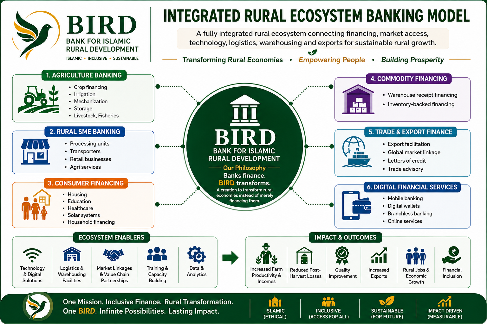

Transforming rural economies through integrated finance.
BIRD is designed as a new model of rural transformation banking—connecting people, productive opportunities, Islamic finance, knowledge, technology, markets and institutions.
Finance is the instrument. Transformation is the destination.
BIRD starts with the rural economic problem rather than a financial product. It combines banking discipline with measurable rural transformation.
People First
Farmers, rural enterprises, women, youth, households and communities sit at the centre of design.
Connected Ecosystems
Finance is connected with knowledge, markets, technology, infrastructure and strategic partnerships.
Measure Change
BIRD measures financial performance and transformation outcomes through a balanced scorecard and RTI.
Banks finance. BIRD transforms.
BIRD is a creation to transform rural economies instead of merely financing them.
One institution. Connected rural economy.
Agriculture, rural SMEs, consumers, commodity finance, trade and digital financial services connect through a shared ecosystem.

From proof of concept to national rural leadership.
Foundation & Proof
Acceptance & Momentum
Replication & Scale
Rapid Expansion
Leadership & Impact
PKR 2.065tn
Year-5 cumulative financing target
PKR 619.5bn
Year-5 cumulative deposits target
1.225M
Rural households
35,000
Commercial customers
From financial access to rural transformation.
The BIRD model links finance with productive activity, value chains, markets, capability and measurable outcomes.
Built for accountability.
BIRD proposes professional Board oversight, independent Shariah governance, risk and compliance discipline, transparent measurement and a rural delivery network extending from Head Office to communities.
View governance modelA doctrine that learns, measures and improves.
The Knowledge Centre is designed to bring together BIRD frameworks, business-plan material, governance models, research, publications and future implementation learning.
Doctrine & Frameworks
Institutional philosophy, transformation architecture and operating concepts.
Business & Impact
Five-year plan, performance assumptions, RTI and transformation measurement.
Implementation Learning
Pilot evidence, case studies, lessons, updates and future research.
One Mission. Inclusive Finance. Rural Transformation.
One BIRD. Infinite Possibilities. Lasting Impact.
Partner With BIRD